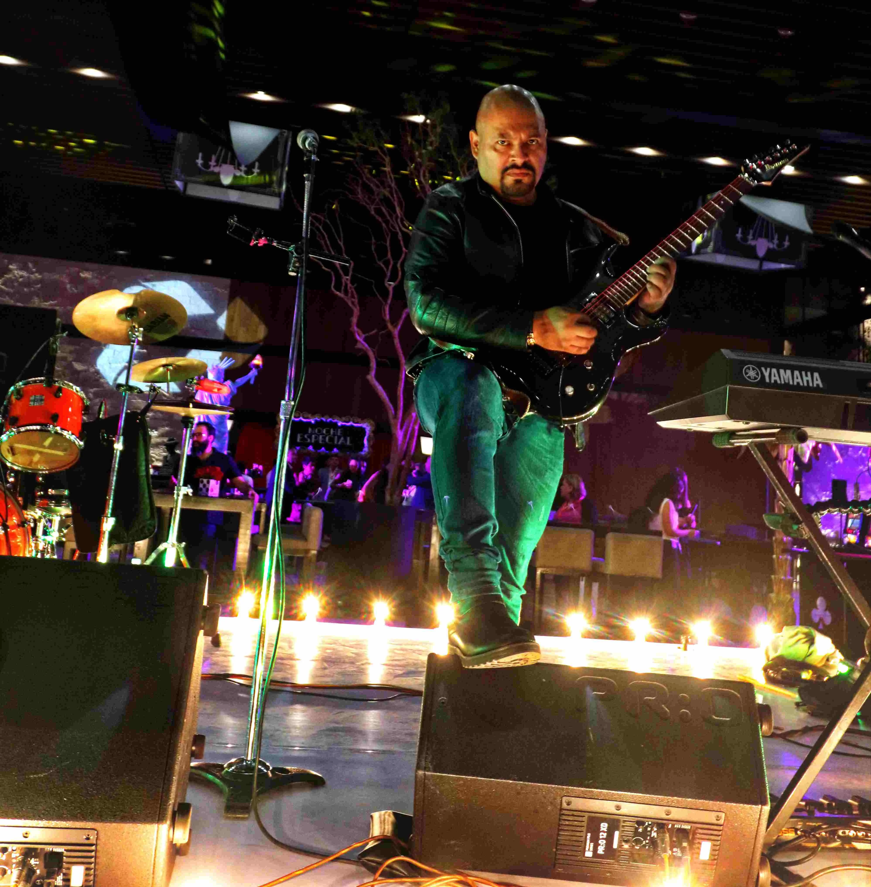

Una boda no es un solo momento musical. Cada fase requiere un enfoque distinto para mantener coherencia y fluidez. Este artículo explica cómo estructurar la música por momentos para crear una experiencia memorable.
Música para ceremonia
- Ritmos suaves: Piezas instrumentales o vocales que no compitan con el protocolo
- Volumen controlado: Permitir que se escuchen votos y lecturas
- Enfoque ambiental: La música acompaña sin protagonizar
En ceremonias en CDMX, especialmente en espacios abiertos, un solista con acompañamiento de teclado ofrece la flexibilidad de ajustar volumen según condiciones acústicas.
Música para recepción y banquete
- Fondos musicales: Jazz, bossa nova, pop suave que permita conversación
- Transiciones discretas: Cambios de ritmo graduales según avanza la cena
- Evitar saturación sonora: Mantener volumen que no interfiera con interacción social
Música para apertura de pista y fiesta
- Ritmos dinámicos: Incremento progresivo de energía
- Repertorio amplio: Mezcla generacional que incluya a todos los invitados
- Participación de invitados: Canciones que inviten al baile colectivo
Checklist de planeación musical
- ☐ Identificar momentos clave que requieren música específica
- ☐ Asignar tipo de música por fase (ceremonia, cóctel, cena, baile)
- ☐ Ajustar duración de cada bloque según cronograma
- ☐ Definir canciones especiales (entrada de novios, vals, lanzamiento de ramo)
- ☐ Confirmar transiciones entre momentos
Errores frecuentes
- Usar un solo ritmo todo el evento sin considerar cambios de energía
- No planear transiciones, generando pausas incómodas
- Elegir canciones sin considerar el perfil de invitados
Preguntas frecuentes
¿Es obligatorio definir todas las canciones?
No; se definen criterios y momentos clave. Un grupo profesional puede adaptar el repertorio en tiempo real según la respuesta del público.
¿Cuántas canciones se necesitan para una boda de 6 horas?
Aproximadamente 80-100 canciones, considerando duraciones promedio de 3-4 minutos y pausas estratégicas.
Planear la música por momentos facilita una experiencia más ordenada y disfrutable. La clave está en entender que cada fase de la boda tiene necesidades musicales distintas.